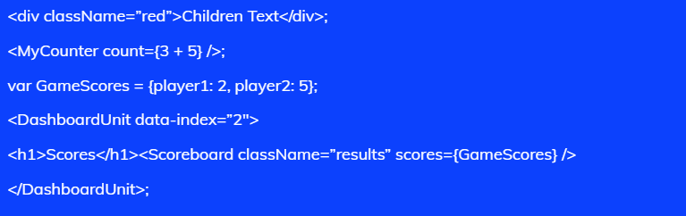
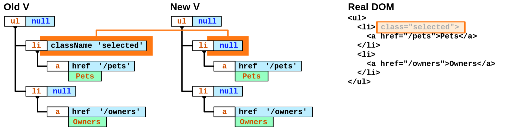
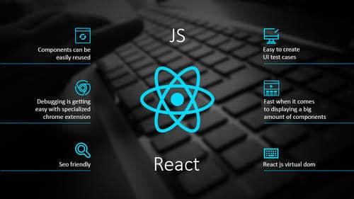
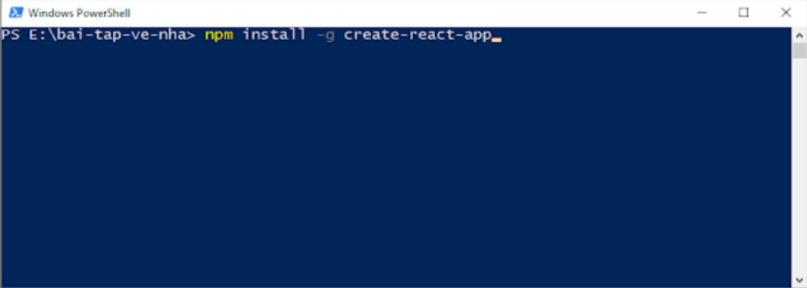
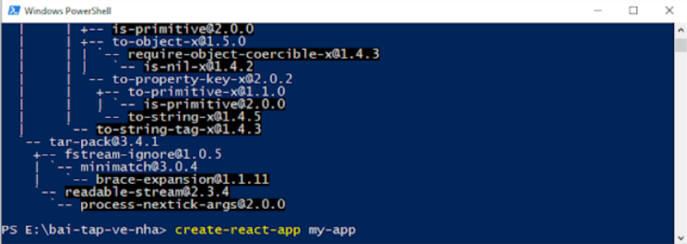
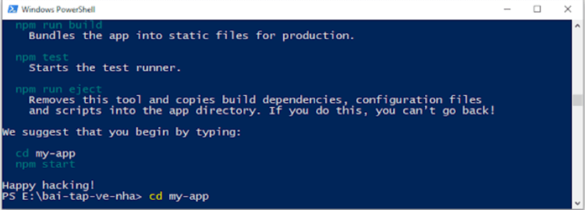
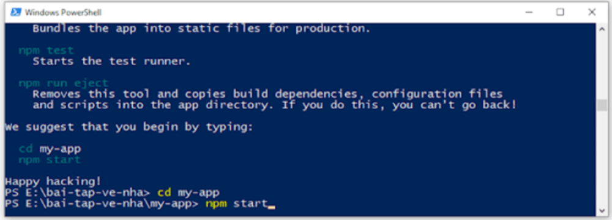
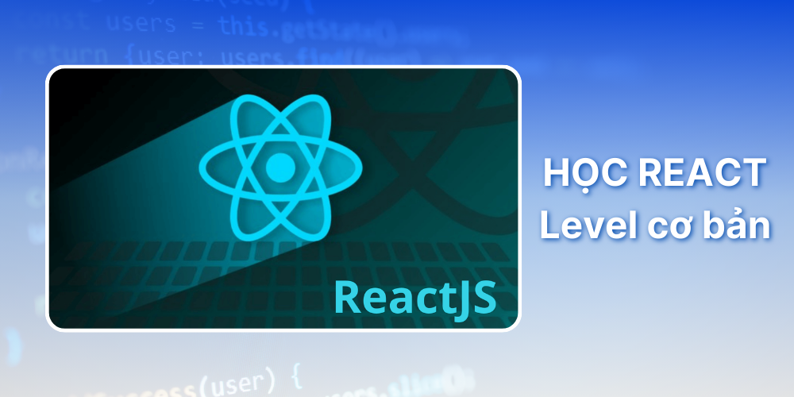

👉React (hãy còn gọi là ,ReactJS hoặc React.js) – được hiểu là một thư viện, mà trong đó sẽ chứa nhiều JavaScript mã nguồn mở. Ngoài ra React.js được sử dụng làm cơ sở để phát triển các ứng dụng SPA (Single page), ứng dụng, thiết bị di động.
👉Bên cạnh đó, React hướng tới việc quản lý và hiển thị trạng thái do DOM. Vì vậy, việc xây dựng ứng dụng bằng React thường được yêu cầu dùng thêm các thư viện bổ sung để thực hiện định tuyến trang.

Mục đích chính của ReactJS là gì?
Hầu như các tính năng của ReactJS xuất phát từ việc tập trung vào những phần riêng lẻ. Và render dữ liệu không chỉ thực hiện ở vị trí server mà còn có khả năng thực hiện ở vị trí Client khi sử dụng nền tảng này.
🖍 1.Ưu Điểm
🖍 2.Nhược Điểm
Tại sao những lập trình viên JavaScript lại sử dụng ReactJS?
👉 ReactJS là một thư viện JavaScript giúp nhà phát triển xây dựng UI hay giao diện người dùng. Trong việc lập trình ứng dụng front-end, các lập trình viên thường phải làm việc chính trên 2 thành phần là xử lý tương tác của người dùng và UI.
👉 Trước khi có nền tảng này, nhiều lập trình viên thường gặp nhiều khó khăn trong việc sử dụng vanilla JavaScript và JQuery để xây dựng UI. Điều đó tương đương với việc quá trình phát triển ứng dụng sẽ mất nhiều thời gian hơn và xuất hiện nhiều rủi ro, bug hơn. Vì vậy, Jordan Walke (một nhân viên của Facebook) đã tạo ra React với mục đích là cải thiện quá trình phát triển UI vào năm 2011..
👉 Để tăng tốc cho quá trình phát triển, giảm thiểu các rủi ro có thể xảy ra trong khi code, ReactJS còn cung cấp khả năng Reusable Code bằng cách đưa ra hai khái niệm quan trọng bao gồm JSX và Virtual DOM.
JSX
👀 JSX là một sự kết hợp giữa những ngôn ngữ lập trình Javascript và những ngôn ngữ dạng đánh dấu XML. Trong đó sẽ là nhiều cú pháp JSX cùng với các cú pháp của XML có những điểm tương đồng nhau. Từ đó, các lập trình viên có thể tận dụng tất cả các ưu điểm nằm trong những cú pháp mở rộng của JSX để có thể code thư viện mã nguồn mở ngôn lập trình Javascript bằng cách sử dụng cú pháp XML.
Virtual DOM
👀 Virtual DOM là một bản copy của DOM thật trên chính trang đó. ReactJS sẽ sử dụng bản copy đó để tìm đúng phần mà DOM thật cần cập nhật khi bất cứ một sự kiện nào đó khiến thành phần trong nó bị thay đổi.
Với việc cập nhật đúng chỗ, nó sẽ tiết kiệm cho chúng ta rất nhiều tài nguyên và thời gian để xử lý.
Ở những trang web lớn và phức tạp như đặt món ăn, thương mại điện tử… bạn sẽ thấy việc này là cực kỳ quan trọng và cần thiết để làm tăng trải trải nghiệm của khách hàng..
🍭 React hoạt động theo một cách đặc biệt và hiệu quả mà ở đó bạn có khả năng viết mã HTML trực tiếp trong JavaScript. Điều này được thực hiện nhờ vào cú pháp JSX – một phần mở rộng cú pháp của JavaScript cho phép kết hợp mã HTML và JavaScript một cách linh hoạt và mạch lạc.
1. Tạo đại diện DOM trong React
Trong React, việc tạo đại diện cho các nút DOM được thực hiện thông qua hàm React.createElement.
VÍ DỤ

Một điểm đặc biệt trong React đó là sử dụng className thay vì class như trong HTML thông thường.
2. Sử Dụng JSX Để Tạo UI
JSX tuy không bắt buộc nhưng đã dần trở thành tiêu chuẩn cho một đoạn mã tốt trong React. Cú pháp này giúp việc tạo và quản lý UI trở nên trực quan và dễ dàng hơn nhiều so với việc sử dụng JavaScript thuần túy.
🔎 Giải thích đoạn code trên 👆
Từ đó có thể thấy trong ví dụ, JSX cho phép sử dụng các biểu thức JavaScript ngay trong cấu trúc UI. Điều này tạo ra một sự linh hoạt đáng kể trong việc phát triển ứng dụng.
3. Tối ưu hóa hiệu suất với Virtual DOM
Một trong những yếu tố chính tạo React là cách nó xử lý DOM. Thay vì cập nhật trực tiếp trên DOM thực tế, React sử dụng Virtual DOM – một bản sao của DOM thực tế. Khi có sự thay đổi trong state hoặc props của component, thì cách hoạt động của React.JS như sau:
Quá trình này giúp tối ưu hóa hiệu suất ứng dụng, đặc biệt là trong các ứng dụng lớn và phức tạp.
ảnh minh họa về Virtual Dom trong React
📝 JSX trong React không chỉ là một công cụ tạo giao diện người dùng mang lại hiệu quả hơn mong đợi, mà còn là một cách tiếp cận linh hoạt và mạch lạc giúp các nhà phát triển (Developers) dễ dàng thể hiện ý tưởng của mình trong quá trình viết code.
📝 Sự kết hợp giữa HTML và JavaScript trong một cú pháp đơn giản và mạch lạc này đã mở ra một kỷ nguyên mới trong phát triển ứng dụng web.
💠 Khi làm việc với React chắc hẳn các bạn sẽ phải tìm hiểm về JSX. JSX (JavaScript XML) là một phần mở rộng của Javascript được viết theo kiểu XML. JSX cung cấp các cú pháp thay thế cho câu lệnh React.createElement() ở trong ReactJS.
1. Cài đặt môi trường
Để có thể cài đặt môi trường, điều đầu tiên chúng ta cần đó là server NodeJS và npm. Bãn chỉ cần lên trang chủ của NodeJS: https://nodejs.org/en/ và tải về rồi bắt đầu cài đặt.
2. Tạo project đầu tiên
Để tạo một project ReactJS bạn bắt đầu vào ổ đĩa E tạo một folder tên “bai-tap-ve-nha” rồi bật cmd lên. Tiếp theo, bạn truy cập vào folder “bai-tap-ve-nha” rồi gõ dòng code “npm install -g create-react-app” như hình bên dưới và nhấn phím Enter.
Tạo một project React
Đợi một khoảng thời gian để nó cài đặt. Sau đó, các bạn gõ tiếp vào câu lệnh “create-react-app my-app” như ảnh bên dưới và ấn phím Enter.
Nhập lệnh “create-react-app my-app”
Sau khi tạo xong project với tên là “my-app”, các bạn sẽ gõ tiếp câu lệnh “cd my-app” như ảnh bên dưới và ấn phím Enter.
Tiếp tục gõ câu lệnh “cd my-app”
Sau khi chuyển cmd vào folder “my-app”, các bạn tiếp tục gõ câu lệnh “npm start” như ảnh bên dưới và nhấn phím Enter để bắt đầu chạy project.
Gõ tiếp câu lệnh “npm start”
Sau khi cài đặt thành công, trình duyệt web sẽ tự động bật và mở lên một trang web có địa chỉ là “http://localhost:3000”.
Trong ReactJS chúng ta sẽ hạn chế sử dụng jquery, code HTML sẽ chuyển sang viết dưới dạng JSX, lưu nó ở file App.JS trong folder. Sau này, khi chương trình hoạt động, nó sẽ tự động chuyển sang dạng HTML để hiển thị lên trình duyệt
📌 Lộ Trình Kiến Thức Cơ Bản Cần Nắm Vững React
Ở mức độ cơ bản, bạn sẽ tìm hiểu các thuật ngữ
📌 Lộ Trình Kiến Thức Nâng Cao React
Khi đã nắm vững cơ bản, bạn sẽ đến với giai đoạn phát triển các ứng dụng thực tế – nơi bạn sẽ va chạm với các vấn đề phức tạp hơn:
📌 Lộ trình học chuyên sâu
Ở giai đoạn chuyên sâu, bạn sẽ học cách kết hợp React với các công cụ và thư viện nâng cao khác để tạo ra các ứng dụng web hoàn chỉnh và chuyên nghiệp: